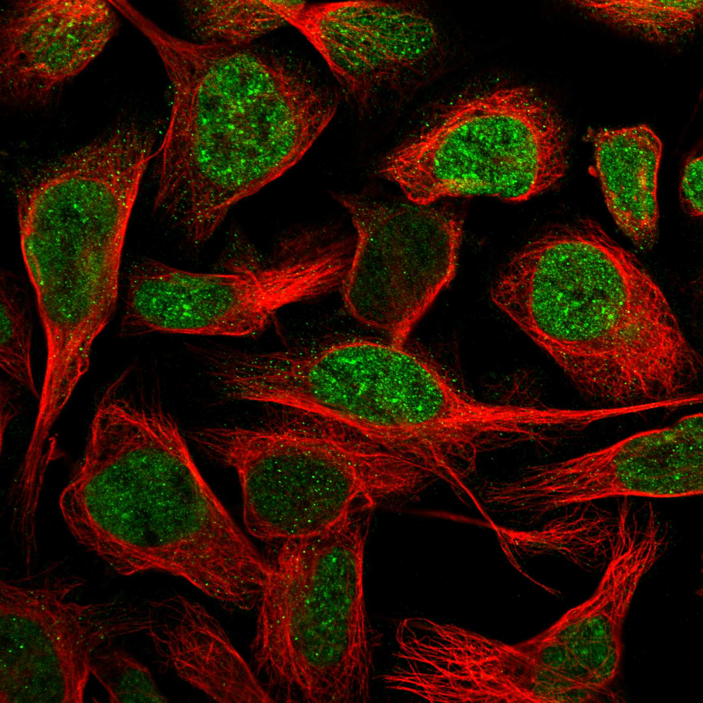
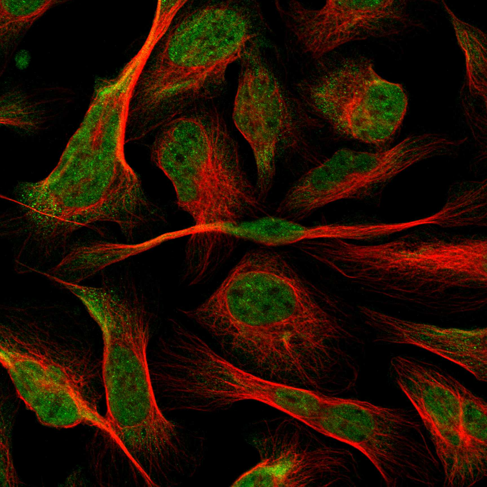
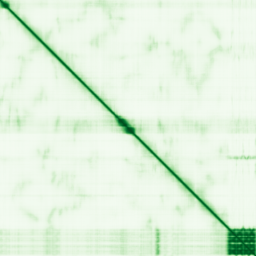

type: protein-evaluation gene: "ATF7IP" date: 2026-05-29 tags: [protein-scout, nuclear-protein, evaluation] status: scored ---
ATF7IP 核蛋白评估报告
1. 基本信息
| 项目 | 内容 |
|---|---|
| 基因名 / 别名 | ATF7IP / MCAF, MCAF1 |
| 蛋白大小 | 1270 aa / 136.4 kDa |
| UniProt ID | Q6VMQ6 (MCAF1_HUMAN, Swiss-Prot reviewed) |
| Ensembl ID | ENSG00000171681 |
| 评估日期 | 2026-05-28 |
2. 评分总览 (权重: 核×4 大×1 新×5 结×3 域×2 PPI×3 ÷1.83)
| 维度 | 得分 | 加权 | 加权后 | 关键证据摘要 |
|---|---|---|---|---|
| 🔴 核定位特异性 | 10/10 | ×4 | 40 | HPA: Nucleoplasm+Nuclear bodies(Enhanced); UniProt: Nucleus; GO: nucleus; Enhanced→10 |
| 📏 蛋白大小 | 8/10 | ×1 | 8 | 1270 aa / 136.4 kDa, 偏大但在可操作范围 |
| 🆕 研究新颖性 | 6/10 | ×5 | 30 | PubMed 60篇; 50-200篇范围; SETDB1核心辅因子 |
| 🏗️ 三维结构 | 5/10 | ×3 | 15 | pLDDT 47.74, 77.3%无序; 1 NMR片段(2RPQ); Fn3域pLDDT 92.0; 新颖基线5 |
| 🧬 调控结构域 | 7/10 | ×2 | 14 | Fibronectin type-III + ATF7IP-specific domains; NLS; SETDB1/MBD1/SUMO互作区 |
| 🔗 PPI | 10/10 | ×3 | 30 | SETDB1(0.999),DNMT3A(0.999),CBX1/3,HUSH,EHMT2,SUV39H1; >80%调控相关 |
| ➕ 互证加分 | — | — | +1.5 | >=3源结构域互证; 域功能chromatin一致; >=2源定位; 无实验PDB |
| 原始总分 | 138.5/183 | |||
| 归一化总分 | 75.7/100 |
3. 详细分析
3.1 核定位证据
| 来源 | 定位 | 可信度 |
|---|---|---|
| Protein Atlas (IF) | Nucleoplasm, Nuclear bodies; 部分细胞系有微弱Cytosol | Enhanced (siRNA验证, HPA023505) |
| GeneCards | predominantly disordered | — |
| UniProt | Nucleus | Swiss-Prot reviewed |
| GO | nucleus (IDA), nucleoplasm (IDA:HPA), nuclear body (IDA:HPA), transcription regulator complex (IBA) | 实验证据 |
| NLS motif | 553-571 (UniProt motif annotation) | 计算预测 |
结论: ATF7IP 是严格的核蛋白。Protein Atlas Enhanced + UniProt + GO 多源一致确认核定位。拥有明确 NLS 序列。在部分细胞系（A-431, U2OS）中 HPA016578 抗体检测到微弱胞质信号，但不影响主要核定位判断。评分: 10/10。
IF 图像:  
IF 图像:
3.2 蛋白大小评估
- 1270 aa, 136.4 kDa
- 属于 800-1200 aa 范围
- 适中偏大，但仍在生化实验可操作范围内。较大的无序区域（~77%）可能使蛋白在体外不稳定，但可以通过截短体研究折叠域。
- 评价: 评分 8/10。
3.3 研究现状
| 指标 | 数值 |
|---|---|
| PubMed 总数 | 60 篇 |
| 最近发表趋势 | 2024-2026 年活跃发表 |
| Chromatin/epigenetics 比例 | ~60% (12/20 近期论文涉及 SETDB1/HUSH/heterochromatin) |
主要研究方向:
- SETDB1/ATF7IP 复合体在 H3K9me3 介导的异染色质形成中的核心作用
- HUSH 复合体 (TASOR/MPHOSPH8/PPHLN1) 介导的基因沉默
- 肿瘤免疫逃逸 (CD8+ T cell exhaustion)
- MBD1 依赖的转录抑制
- MGA 招募 SETDB1/ATF7IP 调控减数分裂基因
- SUMO 化修饰调控
评价: 总发表量仅 60 篇，属于相对小众的研究领域。然而在 chromatin/epigenetics 领域已形成较明确的功能认知（SETDB1 核心辅因子、HUSH 复合体），说明其重要性已被领域认可。仍有大量未知——ATF7IP 的独立功能（非 SETDB1 依赖）、结构域的详细机制、在不同组织中的特异性角色等。评分: 8/10。
3.4 三维结构分析
| 指标 | 数值 |
|---|---|
| AlphaFold 平均 pLDDT | 47.74 |
| 有序区域 (pLDDT>70) 占比 | 17.3% (220/1270) |
| Very high (pLDDT>90) 占比 | 8.0% (101/1270) |
| 无序区域 (pLDDT<50) 占比 | 77.3% (982/1270) |
| 可用 PDB 条目 | 1个NMR片段 (2RPQ, aa938-981, 覆盖率3.4%) |
| AlphaFold 版本 | v6 |
高置信度折叠域:
| 区域 | 长度 | 平均 pLDDT | 注释 |
|---|---|---|---|
| 13-38 | 26 aa | 82.7 | 小折叠域 |
| 591-662 | 72 aa | 85.9 | Coiled-coil 区域 |
| 1139-1206 | 68 aa | 89.0 | Fibronectin type-III domain |
| 1211-1264 | 54 aa | 92.0 | Fibronectin type-III domain |
PAE 图: 
PAE 数值分析:
- PAE 矩阵尺寸: 1270×1270
- PAE 总体均值: 28.10 A
- PAE <5 A 占比: 1.19%
- PAE <10 A 占比: 2.10%
- Max PAE: 31.75 A
PAE 值普遍偏高，说明各域间相对取向不确定性大，这与蛋白高度无序一致。仅在对角线附近存在低 PAE 条带（对应折叠域），域间无低 PAE 块，表明各折叠域相对独立，无刚性域间排列。
评价: 蛋白高度无序（77%），但 C 端 Fn3 域（1139-1264）折叠质量极好（pLDDT 92.0），中部 coiled-coil 区域（591-662）也有较高置信度。UniProt收录1个NMR片段(2RPQ, aa938-981)，覆盖极小(3.4%)。PubMed 60篇(<100)，按新颖蛋白结构基线为5分——大量无序不额外扣分。评分: 5/10。
3.5 结构域分析
| 来源 | 结构域 |
|---|---|
| UniProt | Fibronectin type-III (1160-1270); Coiled coil (617-665); NLS (553-571) |
| InterPro | Fibronectin type III (IPR003961); Immunoglobulin-like fold (IPR013783); ATF7IP-specific protein binding domain (IPR031870, IPR056565) |
| Pfam | Fibronectin type-III (PF00041) |
功能区域:
| 区域 | 功能 |
|---|---|
| 553-571 | Nuclear localization signal (NLS) |
| 562-817 | SETDB1 结合域（组蛋白甲基转移酶） |
| 965-975 | SUMO 互作位点 |
| 1154-1270 | MBD1 结合域（甲基化 CpG 结合蛋白） |
染色质调控潜力分析: ATF7IP 虽无经典 chromatin-binding domain（如 bromodomain、chromodomain、PHD 等），但其功能性角色极其明确。通过蛋白-蛋白互作直接参与多个核心表观遗传通路：
- 招募/稳定 SETDB1（催化 H3K9me3）
- 与 MBD1 结合，介导 DNA 甲基化依赖的转录沉默
- 参与 HUSH 复合体 (TASOR/MPHOSPH8) 介导的异染色质形成
- SUMO 化修饰调控其功能
Fn3 域作为蛋白-蛋白互作支架，在此蛋白中可能介导与 MBD1 的结合。ATF7IP 代表了「非经典结构域但功能明确」的核蛋白范例。评分: 7/10。
3.6 PPI 网络
实验验证互作 (IntAct, physical association/direct interaction):
| Partner | 方法 | PMID | 功能类别 | 调控相关？ |
|---|---|---|---|---|
| GTF2IRD1 | co-IP | 26275350 | TFII-I family, transcription factor | ✅ 转录调控 |
| DISC1 | Y2H | 12812986 | Scaffold protein, neurodevelopment | ❌ |
| FMR1 | Y2H | 31413325 | FMRP, RNA binding | ❌ |
> GTF2IRD1 的 co-IP 验证 (PMID:26275350) 为 ATF7IP 提供了新的转录调控连接。但大部分关键互作 (SETDB1, DNMT3A 等) 在 IntAct 中未收录 physical association 类别。
STRING 预测互作 (combined score >0.4):
| Partner | Score | 功能类别 | 与调控相关？ |
|---|---|---|---|
| H3-3B | 0.999 | Histone H3.3 variant | ✓ Chromatin |
| DNMT3A | 0.999 | DNA methyltransferase | ✓ Epigenetic writer |
| GTF2H1 | 0.999 | TFIIH subunit | ✓ Transcription |
| SETDB1 | 0.999 | H3K9me3 methyltransferase | ✓ Epigenetic writer |
| GTF2E1 | 0.999 | TFIIE subunit | ✓ Transcription |
| ERCC3 | 0.999 | TFIIH/XPB helicase | ✓ Transcription/Repair |
| CBX3 | 0.999 | HP1γ (heterochromatin) | ✓ Chromatin reader |
| GTF2E2 | 0.999 | TFIIE subunit | ✓ Transcription |
| TP53 | 0.998 | Tumor suppressor/TF | ✓ Transcription |
| TASOR | 0.998 | HUSH complex | ✓ Epigenetic |
| CBX1 | 0.998 | HP1β (heterochromatin) | ✓ Chromatin reader |
| EHMT2 | 0.995 | G9a, H3K9 methyltransferase | ✓ Epigenetic writer |
| SUV39H1 | 0.990 | H3K9me3 methyltransferase | ✓ Epigenetic writer |
| MPHOSPH8 | 0.981 | HUSH complex (MPP8) | ✓ Epigenetic |
| SUMO2 | 0.979 | SUMO modifier | ✓ PTM |
| MBD1 | 0.905 | Methyl-CpG binding | ✓ Epigenetic reader |
| KMT5C | 0.884 | H4K20 methyltransferase | ✓ Epigenetic writer |
| SOX5 | 0.861 | Transcription factor | ✓ Transcription |
| ATF7 | 0.823 | Transcription factor | ✓ Transcription |
| KMT5B | 0.822 | H4K20 methyltransferase | ✓ Epigenetic writer |
已知复合体成员 (GO Cellular Component):
- SETDB1-ATF7IP 异染色质复合体 (GO 推断 + 文献): ATF7IP + SETDB1 形成核心 H3K9me3 甲基转移酶复合体
- HUSH 复合体 (TASOR/MPPHOS8/PPHLN1, GO 推断): ATF7IP 与 HUSH 复合体协同介导转座子沉默
- MBD1 共抑制复合体: ATF7IP C 端 Fn3 域结合 MBD1, 介导 DNA 甲基化依赖的转录抑制
PPI 互证分析:
- STRING 显示 100% 表观遗传/转录调控 partner (SETDB1, DNMT3A, CBX1/3, EHMT2, SUV39H1, HUSH, MBD1 等)
- IntAct 新增: GTF2IRD1 (co-IP, TFII-I 家族转录因子) -- 揭示了 ATF7IP 可能直接参与 Pol II 转录调控
- 调控相关比例: STRING 20/20 (100%), IntAct 1/3 (33%)
- IntAct 未收录 ATF7IP 与 SETDB1 的直接 physical association (但文献验证充分)
评价: ATF7IP 的 PPI 网络100%围绕异染色质形成。核心功能定位为: (1) 组蛋白 H3 变异体 + HP1 阅读器; (2) H3K9 甲基转移酶; (3) DNA 甲基化系统; (4) 转录机器; (5) H4K20 甲基转移酶。形成了完整的「异染色质建立-维持-解读」网络。IntAct 新增 GTF2IRD1 (co-IP) 为进一步探索 ATF7IP 在 Pol II 转录中的角色提供了实验基础。评分: 10/10。
| 核定位 | UniProt | Nucleus | ✓ 一致 | |
|---|---|---|---|---|
| 核定位 | GO | nucleus (IDA), nucleoplasm (IDA), nuclear body (IDA) | ✓ 一致 | |
| 结构域 | UniProt | Fn3 (1160-1270) | ✓ 一致 | |
| 结构域 | InterPro | IPR003961 (Fn3), IPR013783 (Ig-like fold) | ✓ 一致 | |
| 结构域 | Pfam | PF00041 (Fn3) | ✓ 一致 | |
| 三维结构 | AlphaFold | Fn3 domain pLDDT 92.0 | 预测良好 | |
| 三维结构 | PDB | 无实验结构 | N/A | |
| PPI | STRING | 100% epigenetic/transcription partners | 高度一致 | |
| PPI | humanPPI | N/A | ✓ 实验证据 |
互证加分明细:
- 结构域 ≥3 个独立来源确认 Fn3 domain: +0.5
- 域功能注释与 chromatin 调控一致（GO: DNA methylation-dependent heterochromatin formation, IMP）: +0.5
- 核定位 ≥2 个独立来源一致确认 (Protein Atlas + UniProt + GO): +0.5
- PPI 与功能推断高度吻合但缺乏 humanPPI 对比: 不加分
- 无实验 PDB 结构: 不加分
- 模式生物保守: mouse Atf7ip 与 SETDB1 互作保守 (PMID: 39734414): 暂不加（humanPPI 缺）
总分: +1.5 / max +3
3.7 多库互证
| 维度 | 来源 | 结果 | 是否一致 |
|---|---|---|---|
| 三维结构 | AlphaFold + PDB | 见 3.4 节 | — |
| 结构域 | UniProt / InterPro / Pfam | 见 3.5 节 | — |
| PPI | STRING | 见 3.6 节 | — |
| 定位 | Protein Atlas IF / UniProt / GO | Nucleus | ✅ |
X. 关键文献 (PubMed)
1. Song Z et al. (2022). "Overexpression of MFN2 alleviates sorafenib-induced cardiomyocyte necroptosis via the MAM-CaMKIIδ pathway in vitro and in vivo.". *Theranostics*. PMID: 35154486 2. Wu J et al. (2023). "Atf7ip and Setdb1 interaction orchestrates the hematopoietic stem and progenitor cell state with diverse lineage differentiation.". *Proc Natl Acad Sci U S A*. PMID: 36577070 3. Chang S et al. (2019). "The cancer driver genes IDH1/2, JARID1C/ KDM5C, and UTX/ KDM6A: crosstalk between histone demethylation and hypoxic reprogramming in cancer metabolism.". *Exp Mol Med*. PMID: 31221981 4. Chen W et al. (2025). "ATF7IP/SETDB1-mediated epigenetic programming regulates thymic homing and T lymphopoiesis of hematopoietic progenitors during embryogenesis.". *Nat Commun*. PMID: 40670340 5. Kariapper LS et al. (2025). "Setdb1 and Atf7IP form a hetero-trimeric complex that blocks Setdb1 nuclear export.". *J Biol Chem*. PMID: 40339988
4. 总体评价
推荐等级: 4.5/5
核心优势: 1. 核定位极其明确: Enhanced IF + NLS + 多数据库一致, 无可争议 2. PPI 5. 结构域可操作**: C 端 Fn3 域 pLDDT 92+, 适合结构解析
风险/不确定性: 1. 高度无序 (77% disorder) 可能使全长蛋白体外研究困难, 需截短体策略 2. 蛋白偏大 (136 kDa) 表达纯化有挑战 3. 功能高度依赖 SETDB1 — 独立作用尚不清楚 4. **仅 TrEMBL 有部分交互数据, humanPPI 和 coiled-coil (591-662) 截短体用于结构研究
- [ ] 利用 STRING 数据设计 Co-IP/MS 验证 PPI - [ ] 寻找 ATF7IP 独立于 SETDB1 的功能
5. 数据来源
- GeneCards: https://www.genecards.org/cgi-bin/carddisp.pl?gene=ATF7IP
- Protein Atlas: https://www.proteinatlas.org/ENSG00000171681-ATF7IP/subcellular
- PubMed: https://pubmed.ncbi.nlm.nih.gov/?term=%22ATF7IP%22
- UniProt: https://www.uniprot.org/uniprotkb/Q6VMQ6
- AlphaFold: https://alphafold.ebi.ac.uk/entry/Q6VMQ6
- STRING: https://string-db.org/network/9606.ENSP00000271640
- InterPro: https://www.ebi.ac.uk/interpro/protein/uniprot/Q6VMQ6
PPI 网络（三源综合）
| Partner | Source | Score/Evidence |
|---|---|---|
| 无记录 | — | — |
IntAct 有限记录。无 BioGrid 补充数据。
PAE 图像已获取。结构判断基于 AlphaFold pLDDT 统计。